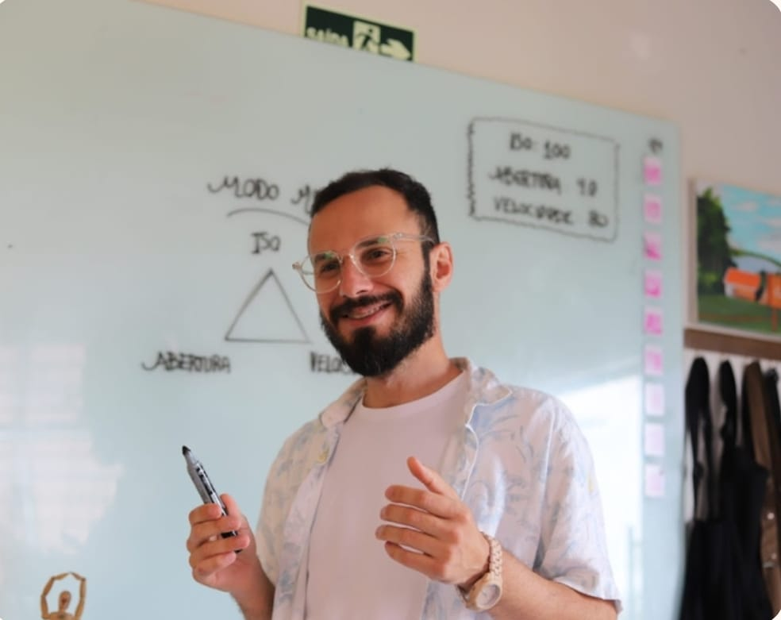

leonardo.silva@ifpr.edu.br
Sobre o autor
Leonardo Nickson é nascido em Telêmaco Borba, Paraná. Iniciou estudos na área musical e em História pela UEL.
Especialista em Artes Visuais (UEM) e Mestre pela UTFPR. Atua com fotografia e audiovisual.